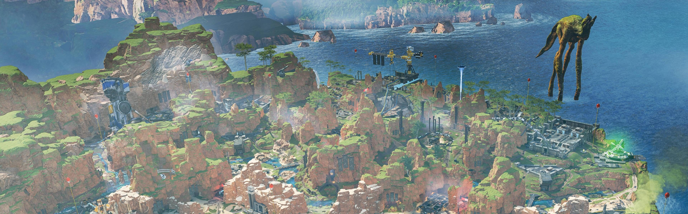
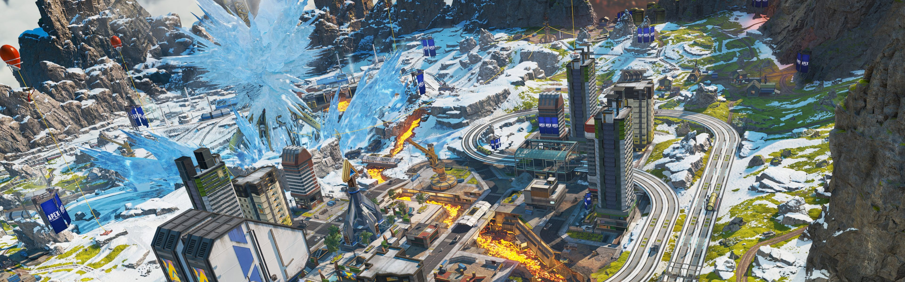

Discover The Maps Of The Apex Games.
Kings Canyon, World's Edge, and Olympus. You've fought there, you've died there, but do you know why they were chosen? Hammond Robotics and the Mercenary Syndicate seem to have a hand in everything that shapes the destiny of the Outlands... Learn more about the maps that host the Apex Games

Broken Moon
Boreas’ moon, Cleo, was once whole–until a meteor and a myth broke it apart. Unbeknownst to the peoples of Boreas, the meteor didn’t just split the moon and cause surface-level destruction, but also sent the entire planet on a path to destruction. It wasn’t until researchers discovered the link between the moon and an increase in devastating weather events that the nations of Boreas came together and promised to heal Cleo, naming their efforts Project Hope. What previously was an unoccupied satellite became a teeming colony of researchers, engineers, and builders. Workers mended divides, celestial rock became fields, and new technologies were born.
However, long years and slow progress caused the peoples’ hearts and wallets to turn from Hope. This forced the Cleo Restoration Committee to privatize the moon for funding–with townhomes, shopping centers, and prestige burial plots added. Now, Cleo is a collection of public and private enterprises, including the Apex Games, all with the hope of saving Cleo and Boreas.

Kings Canyon
Once a simple settlement on Solace, the island known as Kings Canyon didn't thrive until the IMC chose it as a hub for research and development. It housed an airbase, a water treatment plant, and a plethora of other facilities to support IMC operations. To blow off steam, the IMC soldiers stationed here would compete in a gladiator-esque combat arena they nicknamed ‘Thunderdome’, the predecessor of the Apex Games. Secretly, it was also home to underground facilities that hid the IMC’s more radical operations–like a highly classified project on Phase tech and a program to create a simulacra army powered by a single brain.
In the years since the IMC left the Outlands, the island has undergone many changes due to Syndicate construction projects and freak incidents. The most notable being the destruction of the Repulsor Tower, an underground explosion that sank Thunderdome and Skulltown, and a ship crash that obliterated the northern edge of Kings Canyon. Now, the Syndicate is further altering the landscape with terraforming projects to its caves, and salvage operations for Relic (the area formerly known as Skull Town). But no matter how it changes, Kings Canyon will always be the first home of the Apex Games.

Worlds Edge
A harsh planet beset by intense volcanic activity, Talos was once deemed uninhabitable until a rare mineral compound was found beneath its surface. The IMC built heat-reducing towers to super-cool Talos’s natural lava flows and allow resource extraction—the facility that housed them was optimistically dubbed “New Dawn”, and the town of World’s Edge grew around it. Then, an explosion in one of the towers covered the surrounding area in a lethal flash freeze. World's Edge was abandoned, save for a small community of hunters who once spurned technology (led by local hero, Bloodhound).
Over time, the risks were forgotten and World's Edge drew the attention of two new groups who sought to exploit the planet's energy-rich soil: the Mercenary Syndicate and Hammond Robotics. Due to both groups' experimental technologies, World's Edge became unstable and the community of hunters were forced to relocate. In an attempt to divert from controversy, the Apex Games opened a museum dedicated to celebrating the Thunderdome, the Apex Games, and the people who made them great. Today, World’s Edge continues to be the second home of the Apex Games and a key operational center for Hammond Robotics.

Olympus
A harsh planet beset by intense volcanic activity, Talos was once deemed uninhabitable until a rare mineral compound was found beneath its surface. The IMC built heat-reducing towers to super-cool Talos’s natural lava flows and allow resource extraction—the facility that housed them was optimistically dubbed “New Dawn”, and the town of World’s Edge grew around it. Then, an explosion in one of the towers covered the surrounding area in a lethal flash freeze. World's Edge was abandoned, save for a small community of hunters who once spurned technology (led by local hero, Bloodhound).
Over time, the risks were forgotten and World's Edge drew the attention of two new groups who sought to exploit the planet's energy-rich soil: the Mercenary Syndicate and Hammond Robotics. Due to both groups' experimental technologies, World's Edge became unstable and the community of hunters were forced to relocate. In an attempt to divert from controversy, the Apex Games opened a museum dedicated to celebrating the Thunderdome, the Apex Games, and the people who made them great. Today, World’s Edge continues to be the second home of the Apex Games and a key operational center for Hammond Robotics.

Storm Point
This deserted island wasn’t always so deserted. Beautiful and teeming with resources, Storm Point was the prime candidate for early IMC expeditions to planet Gaea. However, IMC settlement teams quickly discovered that intense tropical storms plague the island and a permanent settlement was established nearby–the city of Suotamo. As the city grew, the IMC built power-generating storm catchers on Storm Point to keep up with their energy needs.
When the IMC pulled out of the Outlands, the storm catchers fell into disrepair. Left with only one functional storm catcher and few resources, the naive citizens of Storm Point decided to pull it down for parts. The absence of the storm catcher exacerbated the surrounding storms, causing them to overtake the island. After the Syndicate Treaty brought peace and order to the Outlands, many of the storm catchers were restored and a survey of the area revealed previously unknown settlements but no survivors. The island was then abandoned for many years, save for the occasional scavenger or pirate, until it caught the eye of the Mercenary Syndicate.
They knew there was old IMC tech and dangerous wildlife on Storm Point, but they didn’t realize how deadly the island was until the rumblings of a colossal sea beast woke the old IMC defenses. Now, Spectres roam fully-stocked IMC Armories, giving Apex Games competitors a new challenge.